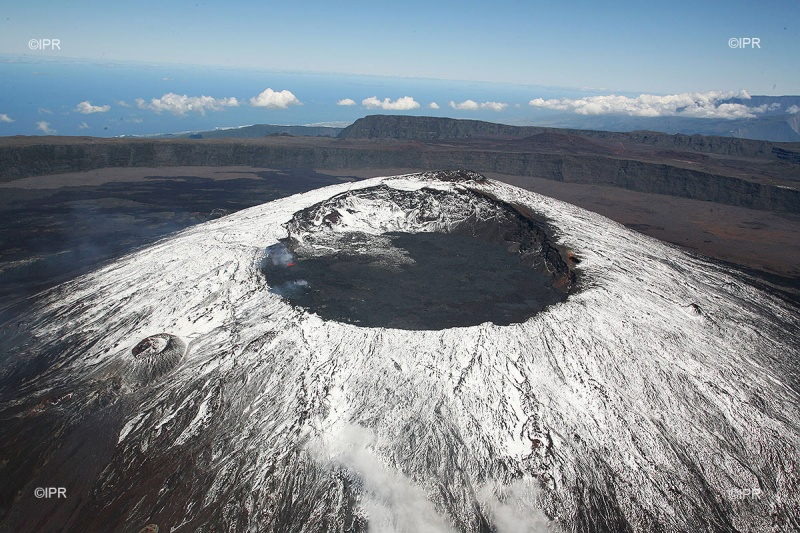

Comme le rappelle aux touristes un fameux T-shirt pardon!, nos hivers sont vos étés, nos étés sont vos hivers, le mois d'août clos l'hiver à la Réunion. Les enfants ne sont pas en vacances et les températures sont au plus bas. Seulement, en tant qu'île tropicale, la Réunion n'est pas l'endroit pour traîner en anorak et se faire rôtir devant un feu de cheminée. Pourtant, il neige à la Réunion.

Le climat tropical de l'île est modéré par la présence des alizés venant de l'est et l'humidité des sols. Les reliefs et l'altitude de certains points font que les hauts connaissent des températures fraîches en hiver. Il n'est pas rare qu'au Tampon ou à Salazie, on y allume des feux de cheminée. Les deux grands massifs montagneux, quand à eux, voient la neige régulièrement.
La neige ne tombe pas tous les ans et ne tient que quelques jours alors cela reste un moment rare mais pas exceptionnel. À Chaque chute de neige, les photos des sommets blanchis montrent l'émerveillement de voir cette forme de précipitation à quelques encablures du tropique du Capricorne. Comme un bon marronnier exotique, les journaux en parlent et les sites de photos s'en font l'écho. Il faut dire que le piton de la fournaise, en activité, offre ce spectacle unique de mélange chaud et froid qu'on aurait tort de manquer.
Ce spectacle de neige et de lave a eu lieu en 2006 et IPR avait effectué un reportage de photos étonnantes cette année là. Reportage ressorti l'année dernière alors qu'il avait neigé dans la nuit du 4 au 5 juin. L'agence photo pays rappelle que les plus grosses chutes de neige ont eu lieu en 2003. j'en avait parlé à l'époque et l'agence a toujours ses photos du Piton des neiges (le bien nommé) vu d'hélicoptère tout en rappelant que de telles paysages étaient visibles aussi en 2001, 2000, 1993 et 1988…
Il a beau y avoir de la neige sur le Piton du même nom, elle ne reste pas assez longtemps et en assez grande quantité pour faire de l'île une station de sports d'hiver. Le ski que connaissent les réunionnais est le ski nautique qui se pratique sur un étang à Saint-Paul. La réunion est d'ailleurs une terre de champions comme le témoigne le site du club, hélas plus vraiment à jour. L'étang de Saint-Paul est un spot mondial de ski nautique et accueil tous les ans une compétition du circuit tour élite comme nous le rappelle le site de la fédé.
Reste la luge. Mais ici encore le manque de neige dans cette île tropicale rend la pratique de la luge difficile. C'est sans compter sur l’ingéniosité de Saint-Paulois qui ont aménagé un parc dans les hauts de la commune, près du Piton Maïdo. Le Piton Maïdo (ou Maïdo) est l'un des plus hauts pic rocheux de l'île et la neige y est déjà tombé. Malgré cela, c'est une piste de luge d'été qui y été aménagée. Utilisable toute l'année, elle est une destination de loisirs très populaire à la Réunion et enchante les petits et les grands.
Oui, il neige à la Réunion et oui, on y pratique le ski et la luge mais pour plagier la citation du début, nos sports d'hiver sont vos sports d'été, nos sports d'été sont nos sports d'hiver.